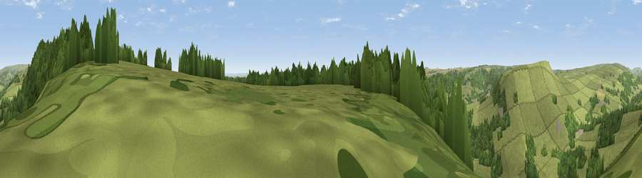

Viewpoint near Hawnby
#25970 in England · top 60% of its area beats it · near HawnbyThe view, rendered

A 360° render of this exact spot computed from the terrain model, tree cover and land cover — summer colours, afternoon light, calibrated against photographs of famous viewpoints. Real trees, hedges and buildings will differ in detail.
The panorama
Grey silhouette: terrain skyline in each direction (720 bearings, Earth curvature and refraction included). Dashed green: skyline with trees (+15 m) and buildings (+8 m) as obstacles. Blue strip: how far the ground is visible on each bearing.
Where the view opens
Wedge length = distance to the farthest visible ground on that bearing (vegetation-aware). Rings at 10, 25 and 50 km.
What fills the view
63% grassland · 34% woodland · 3% cropland
Angular shares of the visible panorama (visual magnitude), not map area. Landscape diversity 0.34 (0–1 Shannon).
Key numbers
More beautiful places nearby
The staircase of upgrades: each row has a higher view potential than everything closer. Driving times are estimates from straight-line distance, calibrated against real road routing — check an actual route before setting out.
| Place | Direction | Drive | Score |
|---|---|---|---|
| Rievaulx Moor | NE · 2 km | ~5 min | 69.0 |
| Viewpoint near Carlton | ENE · 2 km | ~5 min | 69.1 |
| Viewpoint near Carlton | ENE · 6 km | ~12 min | 71.4 |
| Viewpoint near Carlton | E · 6 km | ~13 min | 71.6 |
| Viewpoint near Boltby | WSW · 7 km | ~14 min | 75.7 |
| Viewpoint near Boltby | WSW · 8 km | ~15 min | 79.6 |
| Viewpoint near Thirlby | SW · 9 km | ~17 min | 81.2 |
| Viewpoint near Thirlby | SW · 9 km | ~17 min | 81.5 |
54.29906, -1.12527 · source: screening · position refined by local search. Computed location — check access rights before visiting.